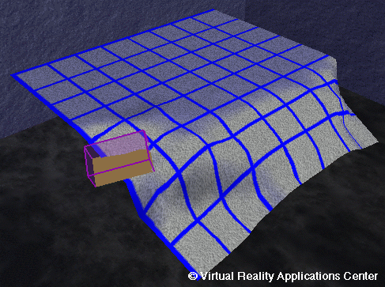
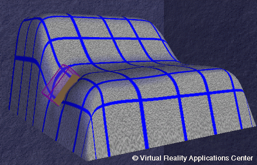

DN-Edit: Multiple Point Direct Manipulation of NURBS Surfaces in a Virtual Environment

Overview
DN-Edit is a program for directly manipulating NURBS surface using a virtual reality
(VR) interface.
NURBS, or Non-Uniform Rational B-Splines, are a parametric surface representation
that is difficult to edit with the trational desktop computer due to their 3D nature.
VR provides an acess to input and display devices with the same number
of degrees of freedom as the modeling environment has dimentions.
Users of DN-Edit modify the surface using virtual tools. Each tool is a shape that
is attached to the user's hand with a 6D magnetic tracking system. Tools match the
user's hand position and orientation. The user is then able to edit the shape of the
surface using hand motions.
Virtual tools give the user control over an arbitrary point on the surface, an area
of the surface, or the surface normal at an arbitrary point.

Virtuals Tools
The surface responds to the tools in real time.
- Point Tool: Pushes in or pulls out a single point on the surface -
Point Tool
- Block Tool: Pushes in or pulls out an area of the surface -
Block Tool
- Normal Tool: Controls the surface normal at a point -
Normal Tool
Pictures showing interaction in the C2
Equipment
- Virtual Research V8 Head Mounted Display
- Flock of Birds 6D tracking system
- Homemade wand build from Saber joystick
- C2 Libraries for managing peripherals
- OpenGL for rendering
Publications
- Perles, Brian P., and Vance, Judy M.,
"
Interactive Virtual Tools for Manipulating NURBS Surfaces in a Virtual Environemnt,"
Journal of Mechanical Design, 2001. (in press)
- Perles, Brian P., and Vance, Judy M.,
"
Interactive Virtual Tools for Manipulating NURBS Surfaces in a Virtual Environemnt,"
ASME 1999 Industrial Virtual Reality: Manufacturing and Design Tool for the Next Millenium Symposium
Proceedings, Chicago, IL, Nov. 1999, MH-Vol 5./MED-Vol. 9, pp. 85-91.
- Perles, Brian, Development of Virtual Tools for Direct Manipulation of NURBS Surfaces in Virtual Environments, Master's Thesis Defense, July 2, 1999.
Personnel
Funding
Facilities
Mechanical Engineering | VRAC | ISU |
Home | E-mail | Previous
{kind=link}
{kind=link}
{kind=link}